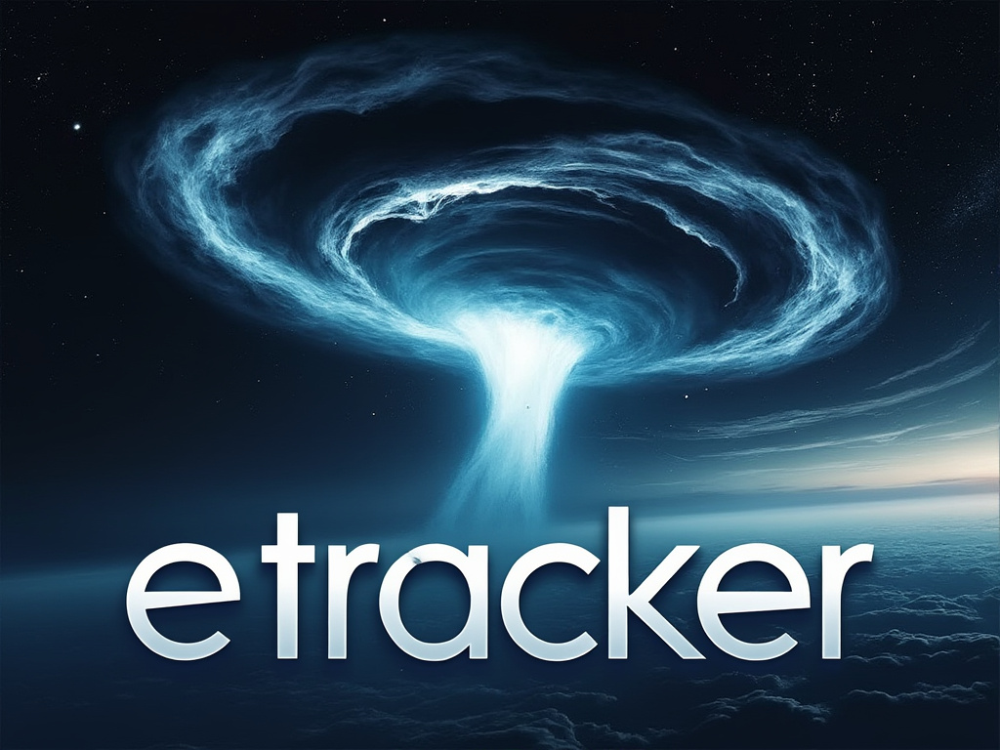

Projects
I've been deeply involved in both Erlang and C++ projects, each offering unique challenges and rewards. With Erlang, I've enjoyed working on systems that demand high availability and fault tolerance, often crafting scalable distributed applications where concurrency is handled elegantly through its process model. The functional programming paradigm in Erlang has refined my approach to concurrent programming, making me appreciate the simplicity and robustness it brings to building telecom systems and real-time web services. On the other hand, my engagement with C++ projects has allowed me to dive into lower-level systems programming, optimizing performance, and managing resources manually, which has honed my skills in memory management and efficiency. The stark contrast between the two languages has broadened my perspective on software design, enabling me to select the best tool for the job based on the specific requirements of performance, scalability, and development speed.
Erlang
-

XTEA encryption
-

Bittorrent tracker
-

Bencoding library
-

Gopher server
C++
-

Music box
-

LCD library